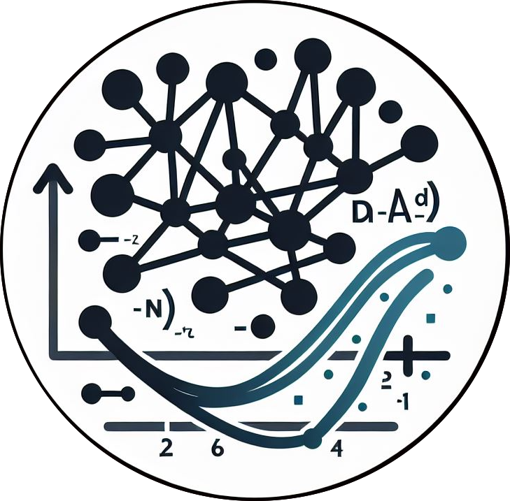

Neural nets, deep learning, machine learning, artificial intelligence – these topics are increasingly critical in many domains and engineering is no exception. Neural nets have been shown to be highly effective function approximators. However, their usage in an engineering context differs from other applications in that models must satisfy the laws of physics and other constraints. For example, it is not good enough for a predicted fluid flow field to look realistic, it must satisfy the mass, momentum, and energy conservation laws. Additionally, engineering applications often have mathematical structure that we can leverage (e.g., ordinary and partial differential equations) leading to different architecture decisions. In this course, we will study deep learning principles and skills specific to engineering applications using state-of-the-art research advances.
